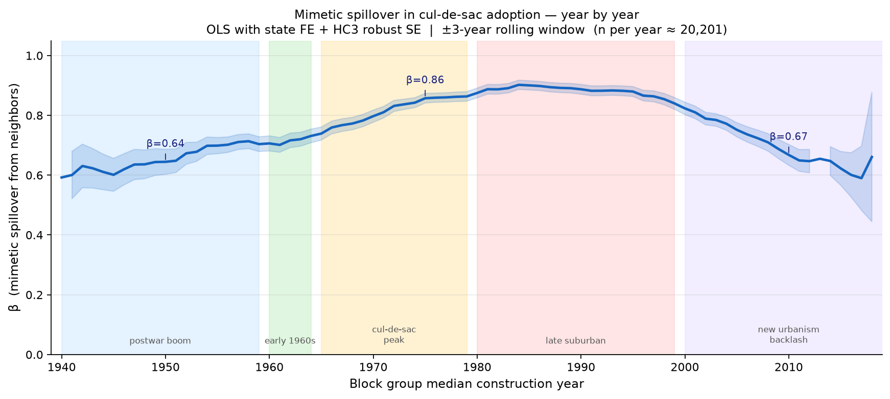
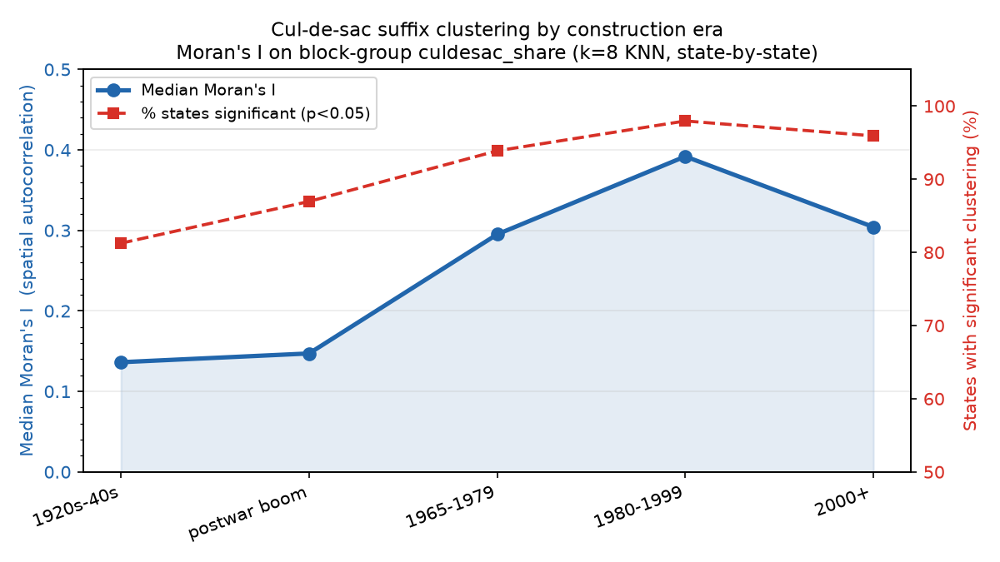
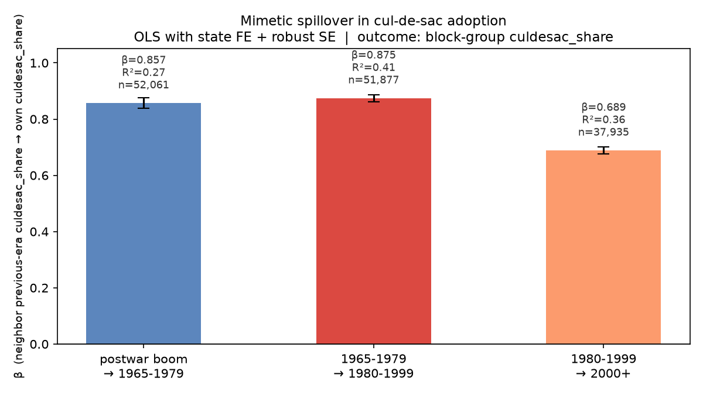

Years with reliable estimates: 74 (1941–2015)
β range: 0.601 – 0.902
Median n per year: 20,814Spatial Mimesis in Street Design
Did neighborhoods copy their neighbors’ cul-de-sac patterns — and when did that change?
The question
Suburban street networks are not designed in isolation. Developers and planners look at neighboring subdivisions when deciding how to lay out new streets. If this neighborhood-copying dynamic is real, we should see a measurable spatial lag — a block group’s share of dead-end streets should be strongly predicted by its neighbors’ share, above and beyond shared state-level norms or national trends.
And the strength of that copying should vary over time. The cul-de-sac as design ideology spread rapidly through the 1960s and 1970s, became a regulatory default by the 1980s, and has faced mounting criticism from New Urbanism and walkability advocates since the 2000s. If mimetic copying was the mechanism, the spatial lag β should rise and fall accordingly.
Data
Block groups are drawn from ACS 2022 data across 48 states (~207,000 block groups). Each block group’s cul-de-sac share is computed from OpenStreetMap: the fraction of street segments classified as cul-de-sac suffix types (Court, Place, Circle, Cove, etc.). The block group’s median construction year from ACS housing stock data places it in historical time.
The spatial weight matrix uses k=8 nearest neighbors (Haversine distance on block group centroids). The neighbor lag is the simple average of the k neighbors’ cul-de-sac share.
Estimating equation
For each construction year Y, restricting to block groups with median construction year within ±3 years of Y:
\[\text{culdesac\_share}_i = \alpha + \beta \cdot \text{neighbor\_lag}_i + \sum_s \gamma_s \cdot \mathbf{1}[\text{state}_i = s] + \varepsilon_i\]
State fixed effects absorb broad regional norms (Sun Belt vs. Northeast, state zoning culture). HC3 heteroskedasticity-robust standard errors throughout.
Year-by-year results

The arc is striking. Mimetic spillover is already substantial in the postwar boom (β≈0.64 in 1950) — developers copying nearby subdivisions is not new. But it intensifies sharply through the 1960s and 1970s as the cul-de-sac becomes the dominant organizational logic of residential development, peaking around β≈0.90 in the early 1980s. This is the era of the planning monoculture: zoning codes in most jurisdictions were explicitly prescribing cul-de-sac layouts, and the copying was not just imitation but regulatory mandate.
The decline after 2000 is equally informative. New Urbanism, walkability research, and backlash against suburban isolation began reshaping planning codes from the late 1990s onward. The β falls to ≈0.67 by 2010 — still high, but meaningfully lower than the peak. The spatial monoculture is loosening.
Moran’s I: clustering by era
| Era | Median Moran's I | % States Significant (p<0.05) | N States | |
|---|---|---|---|---|
| 0 | 1920s-40s | 0.136 | 81.2% | 48 |
| 1 | postwar boom | 0.147 | 87.0% | 46 |
| 2 | 1965-1979 | 0.295 | 93.9% | 49 |
| 3 | 1980-1999 | 0.392 | 98.0% | 49 |
| 4 | 2000+ | 0.304 | 95.9% | 49 |

Moran’s I — a global measure of spatial autocorrelation in cul-de-sac share across all block groups within a state — tells a complementary story. Geographic clustering of cul-de-sac density is weak in the 1920s–40s (I≈0.14), intensifies through the postwar and 1965–1979 eras, peaks in 1980–1999 (I≈0.39), and remains elevated but declining in 2000+. By the 2000s, essentially every state shows statistically significant clustering (>95% of states, p<0.05).
Era-to-era propagation

The bucketed era analysis asks a slightly different question: how much does a block group’s cul-de-sac density depend on the cul-de-sac density of its earlier-built neighbors? This captures cross-era transmission — whether the suburb built in 1975 reflects the pattern set by the 1955 suburb next door.
The β remains high (≈0.86–0.88) for postwar → 1965–1979 and 1965–1979 → 1980–1999 transitions, then drops to ≈0.69 for the 1980–1999 → 2000+ transition. Again: the copying mechanism persists but weakens as design alternatives gain legitimacy.
Interpretation
Three findings converge on the same story:
- Cul-de-sac adoption was highly mimetic. Neighborhood-copying accounts for 60–90% of the variance in local dead-end street density after state fixed effects.
- The mimesis intensified through the 1960s–1980s as the cul-de-sac became a regulatory default, then weakened as New Urbanism offered an alternative design vocabulary.
- The mechanism is spatial, not just temporal. It is not that all neighborhoods in a given decade adopted cul-de-sacs; it is that neighborhoods copied neighboring neighborhoods specifically. The spatial lag β, not just the era mean, is the signal.
This connects the street suffix analysis to a broader point about the role of imitation in built-environment production. The suffix divergence documented in the main analysis — cul-de-sac streets named “Court,” “Place,” and “Circle” becoming interchangeable — is the vocabulary signature of a planning monoculture that the spatial analysis reveals quantitatively.